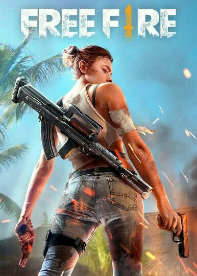
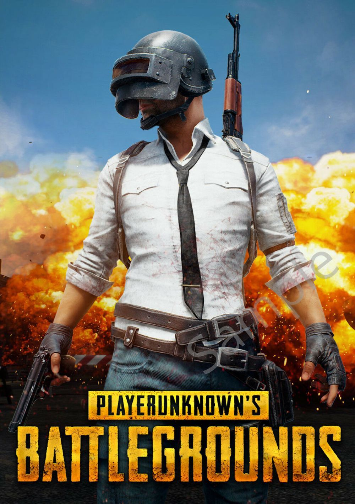

A continuación, encontrarás reseñas de videojuegos populares
y enlaces para descargarlos.
Free Fire
Free Fire es un juego de tipo battle royale donde el objetivo
es ser el último en pie entre 50 jugadores en una isla. Aunque sus
gráficos no son su punto fuerte, ofrece una experiencia divertida y
es compatible con dispositivos de gama baja.
Video de jugador popular de Free Fire
Pubg Mobile
PUBG Mobile es una adaptación del popular juego de PC, ofreciendo
una experiencia de battle royale con gráficos sobresalientes para
dispositivos móviles. Destaca por su variedad de mapas y modos de juego,
brindando una experiencia de supervivencia emocionante.
Video de jugador pupular de Pubg Mobile
League of Legends
League of Legends es un juego en equipo con más de 140 campeones,
ofreciendo jugadas épicas y una alta competitividad. Es gratuito y
proporciona momentos intensos y absorbentes, aunque no es apto para
jugadores ocasionales.